Causal Inference Through the Lens of Probabilistic Programming
HU Berlin: Causal Inference in Marketing
Outline
- Why PPLs for Causal Inference?
- Bayesian A/B Testing
- Bayesian Power Analysis
- Bayesian CUPED
- Confounders: An Example
- Fixed & Random Effects
- Mediation Analysis
- Marketing Mix Modeling
- References
What is Causal Inference?
- Goal: Estimate the effect of a treatment \(T\) on an outcome \(Y\).
- Potential outcomes (Rubin, 1974): For each unit \(i\), there exist two potential outcomes:
- \(Y_i(1)\): outcome if treated
- \(Y_i(0)\): outcome if not treated
- Individual Treatment Effect: \(\tau_i = Y_i(1) - Y_i(0)\)
- Average Treatment Effect (ATE):
\[ \text{ATE} = \mathbb{E}[Y(1) - Y(0)] \]
The Fundamental Problem of Causal Inference
We can never observe both \(Y_i(1)\) and \(Y_i(0)\) for the same unit. One potential outcome is always missing (counterfactual).
\[ \text{Observed: } Y_i = T_i \cdot Y_i(1) + (1 - T_i) \cdot Y_i(0) \]
This is why naive comparisons (treated vs. untreated) can be biased: the groups may differ systematically due to confounders.
What is Bayesian Statistics?
Bayes’ theorem: Update beliefs about parameters \(\theta\) after observing data \(y\):
\[ \underbrace{p(\theta \mid y)}_{\text{posterior}} \propto \underbrace{p(y \mid \theta)}_{\text{likelihood}} \cdot \underbrace{p(\theta)}_{\text{prior}} \]
- Prior \(p(\theta)\): encodes domain knowledge before seeing data.
- Likelihood \(p(y \mid \theta)\): how probable the data is given the parameters.
- Posterior \(p(\theta \mid y)\): updated beliefs after observing data.
The PPL bridge
In a generative graphical model, every distribution starts as a prior over the data-generating process. Once we condition on observed data, those priors become likelihoods. A causal model and a Bayesian model are the same object, viewed before and after observing data.
Why PPLs for Causal Inference?
Model = DAG: Writing the generative process forces you to explicitly state your causal assumptions: this alone is valuable!
Uncertainty for free: Posterior distributions over causal effects.
Prior Modeling: Setting priors to reflect our domain knowledge.
Flexible modeling: Swap likelihoods (Normal \(\to\) Gamma), add hierarchical structure (Mundlak), or latent variables for unobserved confounders (CEVAE).
do-operator: Intervene on the generative model for counterfactual reasoning.Fast inference: Modern MCMC (NUTS) and SVI make posterior computation scalable and reliable.
This does not imply that Bayesian methods are better than frequentist methods! For every framework, you need to know the assumptions and the limitations.
PPLs do not solve identification! They make estimation under causal assumptions.
Bayesian A/B Testing
A/B testing is the gold standard of causal inference: random assignment makes treatment independent of all confounders, observed and unobserved. The hard part shifts from identification to estimation under uncertainty.
with pm.Model() as non_informative_model:
conversion_rate_control = pm.Uniform(
"conversion_rate_control", lower=0, upper=1
)
conversion_rate_treatment = pm.Uniform(
"conversion_rate_treatment", lower=0, upper=1
)
relative_lift = pm.Deterministic(
"relative_lift",
conversion_rate_treatment / conversion_rate_control - 1,
)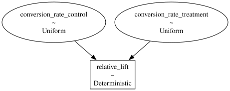
\[\begin{align*} \text{cr}_\text{c} & \sim \text{Beta}(1, 1) \\ \text{cr}_\text{t} & \sim \text{Beta}(1, 1) \\ \text{lift} & = \text{cr}_\text{t} / \text{cr}_\text{c} - 1 \\ N_{\text{c}} & \sim \text{Binomial}(N, \text{cr}_\text{c}) \\ N_{\text{t}} & \sim \text{Binomial}(N, \text{cr}_\text{t}) \\ \end{align*}\]
Uninformative Priors: Implications
Uninformative Priors yield implausible values for the relative lift.
Setting uninformative priors for the conversion rates yields implausible values for the relative lifts as this is a ratio of two random variables, so it can blow up to infinity or zero.
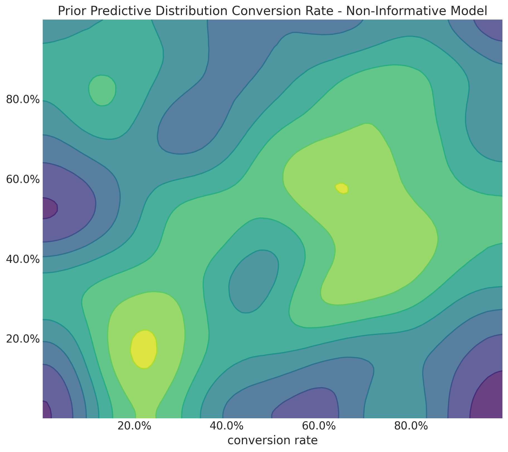
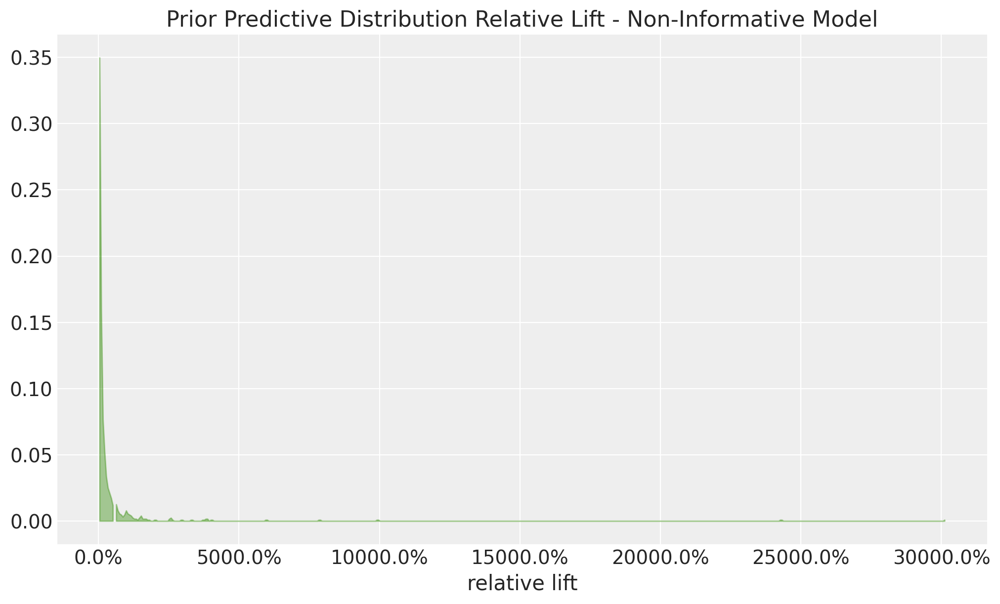
Informative Priors: Implications
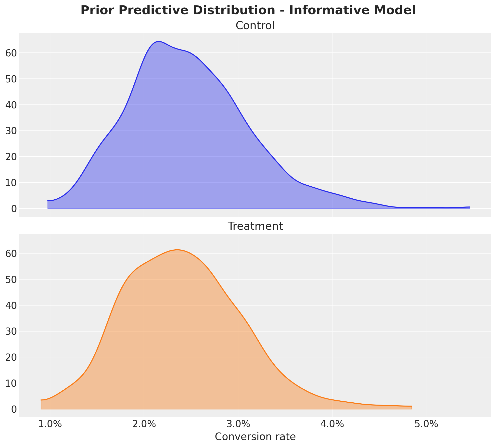
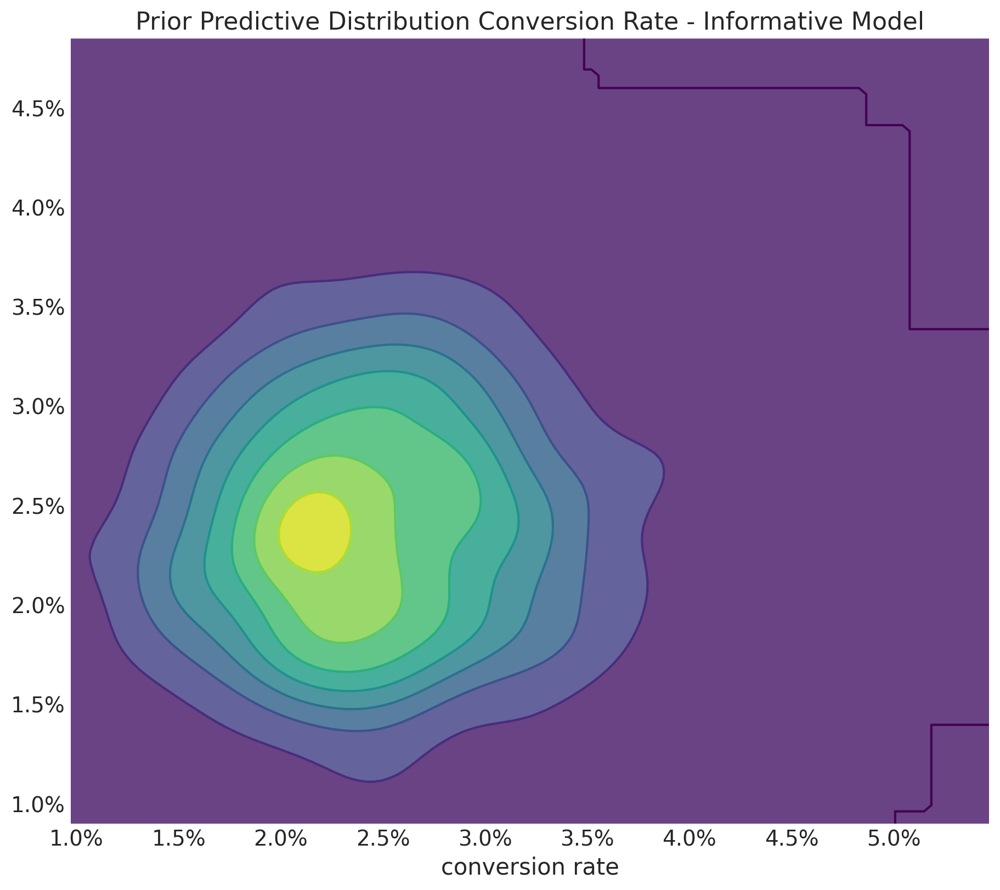
Informative Priors
Even if we set informative priors for the conversion rates, the relative lift range is still unreasonably wide.
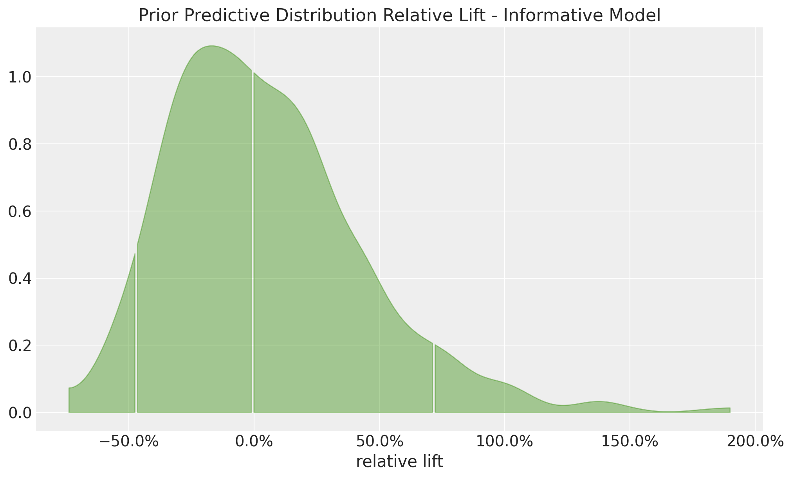
Correlated Priors: Implications
with pm.Model() as correlated_model:
conversion_rate_control = pm.Beta(
"conversion_rate_control", alpha=15, beta=600
)
relative_lift = pm.Normal(
"relative_lift", mu=0, sigma=0.1
)
conversion_rate_treatment = pm.Deterministic(
"conversion_rate_treatment",
conversion_rate_control * (1 + relative_lift)
)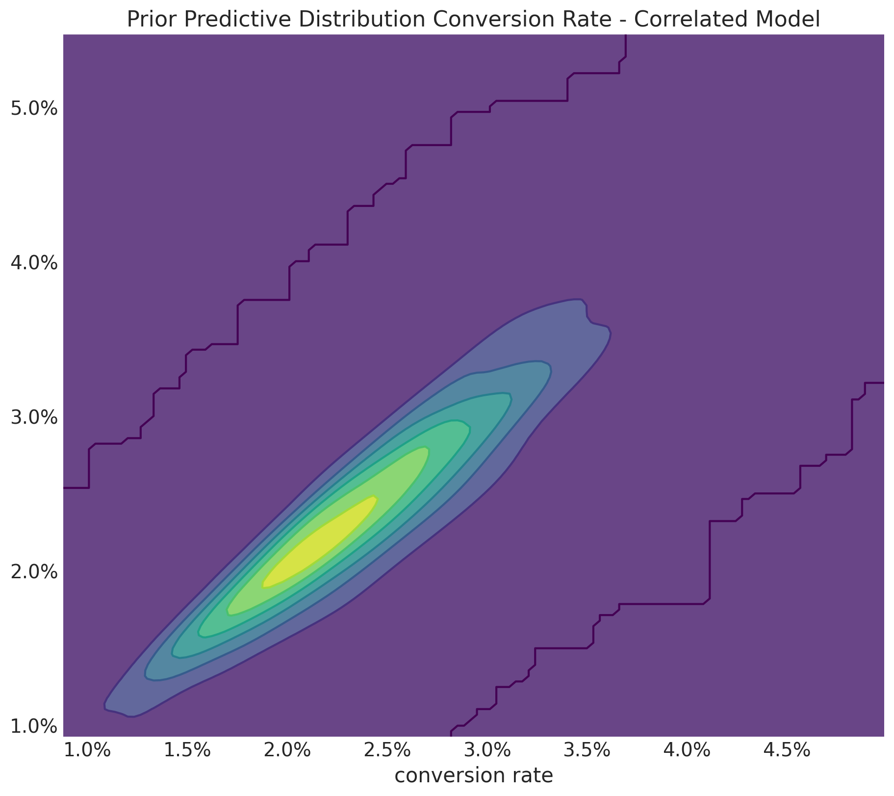
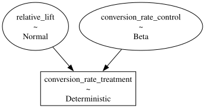
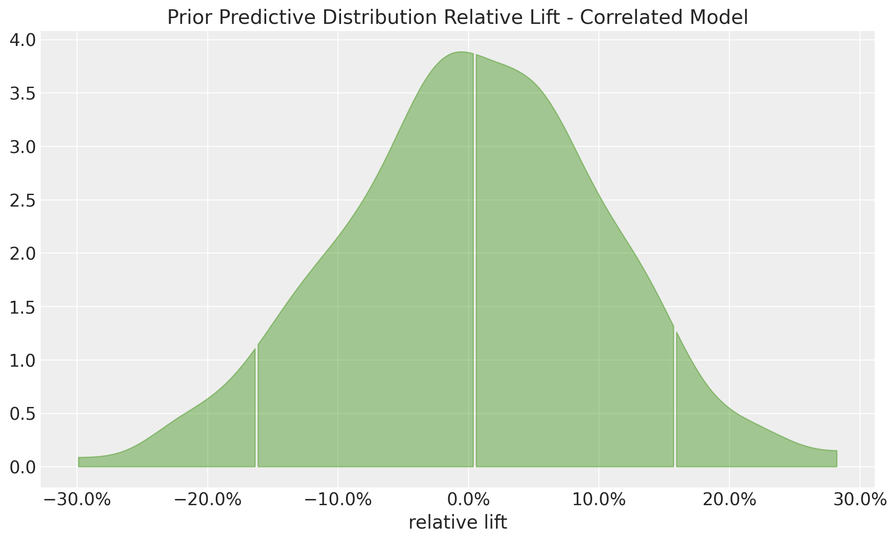
{fig-align=“center” width=“4Inference with Correlated Priors
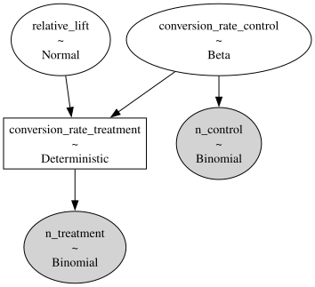
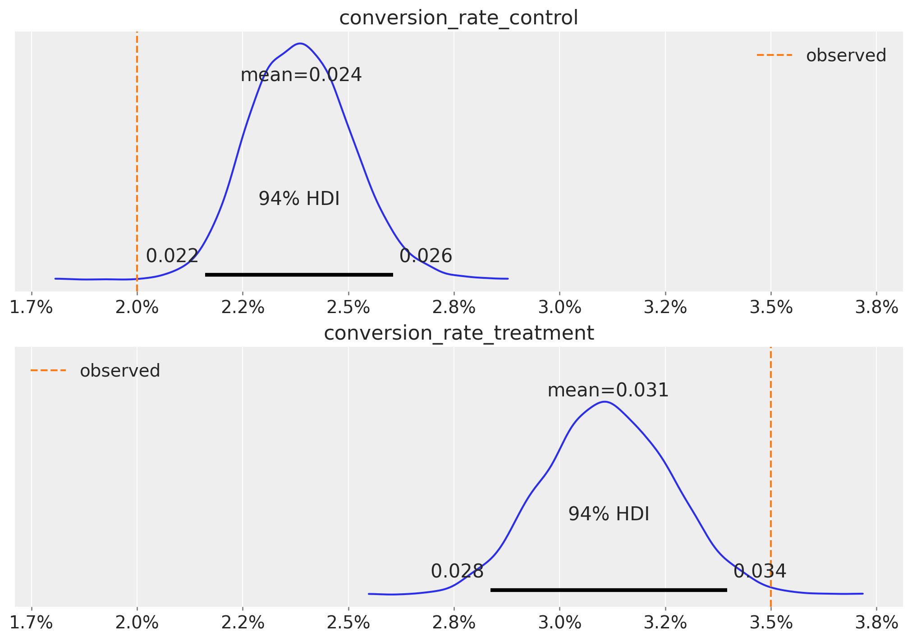
Bayesian Power Analysis
HDI + ROPE Framework
Declare significance when the \(94\%\) HDI of the posterior lift excludes the ROPE (Region of Practical Equivalence) around zero.
Five-step process:
- Generate parameter values from a hypothetical distribution
- Simulate data samples using the generative model
- Compute posterior estimates with Bayesian analysis for various sample sizes
- Assess whether the \(94\%\) HDI excludes the ROPE
- Repeat to approximate statistical power
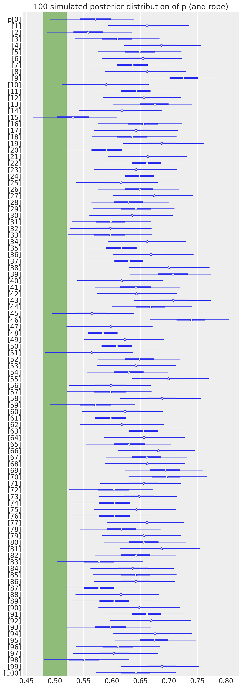
Power Curves

Bayesian CUPED
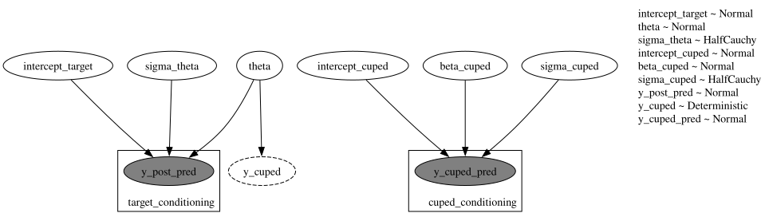
CUPED: Use pre-treatment outcome as a covariate to reduce posterior variance of the causal effect estimate.
Regress \(y_{\text{post}}\) on \(y_{\text{pre}}\) and estimate the \(\theta\) coefficient.
Compute \(y_{\text{cuped}, i} = y_{\text{post}, i} - \theta \, (y_{\text{pre}, i} - \bar{y}_{\text{pre}})\) for each unit \(i\).
Compute the difference in means of \(y_{\text{cuped}}\) between treatment and control group.
\[ y_{\text{cuped}} = \alpha + \beta_{\text{cuped}} \times \text{treatment} + \varepsilon \]
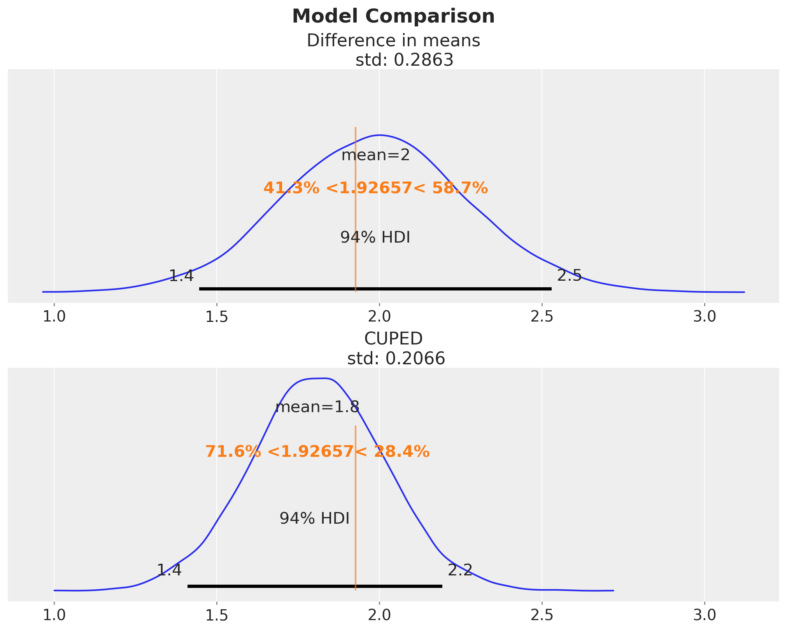
Confounders: An Example
The Lalonde Dataset: Job training program (National Supported Work, 1970s)
Question: Does job training increase earnings?
- Treatment: Participation in a job training program
- Outcome: Earnings in 1978 (
re78) - Covariates: Education, age, prior earnings (
re75), race/ethnicity, marital status, degree - Naive comparison (difference in means): treated earned $635 less than untreated
- But treatment was not randomly assigned…
- Confounders create a spurious association!
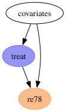
The Causal DAG
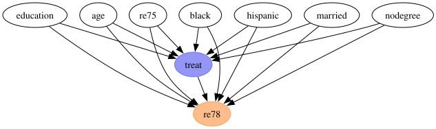
Backdoor criterion: block all backdoor paths from treatment to outcome to identify the causal effect.
ATE Estimation Strategies
Two ways to estimate the ATE:
(1) Read the estimate from a regression coefficient:
Fit a linear model of the form
\[ \text{earnings} = \alpha + \beta_{\text{treat}} \text{treat} + \beta_{\text{covariates}} \text{covariates} + \varepsilon \]
and identify the estimate of \(\beta_{\text{treat}}\) as the ATE.
(2) Use the do operator for counterfactual computation:
\[ \text{ATE} = \mathbb{E}[\text{earnings} \mid \text{do}(\text{treat} = 1)] - \mathbb{E}[\text{earnings} \mid \text{do}(\text{treat} = 0)] \]
Pearl’s do operator and counterfactuals
The do operator implements Pearl’s intervention:
\[P(Y \mid \text{do}(T = t))\]
It cuts incoming edges to the treatment node, simulating a randomized experiment.
PyMC Model: Treatment Sub-model
with pm.Model(coords=coords) as earnings_model:
# --- Data ---
covariates_data = pm.Data(
"covariates_data", covariates_obs, dims=("obs_idx", "covariate")
)
# --- Priors ---
intercept_treat = pm.Normal("intercept_treat", mu=0, sigma=10)
beta_covariate_treat = pm.Normal(
"beta_covariate_treat", mu=0, sigma=1, dims=("covariate",)
)
# --- Parametrization ---
logit_p_treat = intercept_treat + pm.math.dot(
covariates_data, beta_covariate_treat
)
p_treat = pm.math.sigmoid(logit_p_treat)
# --- Likelihood ---
treat = pm.Bernoulli("treat", p=p_treat, dims=("obs_idx",))PyMC Model: Earnings Sub-model
# --- Priors ---
intercept_earnings = pm.Normal("intercept_earnings", mu=0, sigma=10)
beta_treat_earnings = pm.Normal("beta_treat_earnings", mu=0, sigma=1)
beta_covariate_earnings = pm.Normal(
"beta_covariate_earnings", mu=0, sigma=1, dims=("covariate",)
)
sigma_earnings = pm.HalfNormal("sigma_earnings", sigma=10.0)
# --- Parametrization ---
mu_earnings = pm.Deterministic(
"mu_earnings",
intercept_earnings + beta_treat_earnings * treat
+ pm.math.dot(covariates_data, beta_covariate_earnings),
dims=("obs_idx",),
)
# --- Likelihood ---
pm.Normal(
"earnings", mu=mu_earnings, sigma=sigma_earnings, dims=("obs_idx",)
)PyMC Model: Generative Process
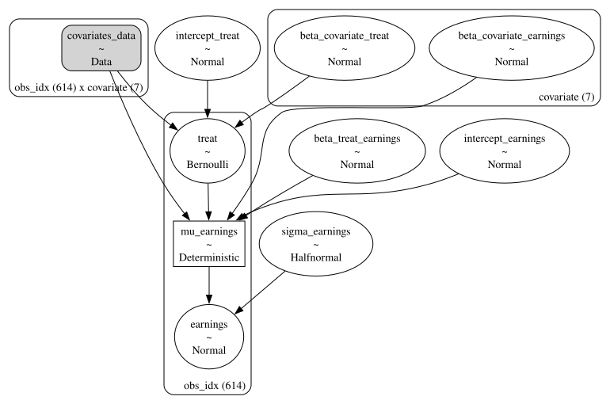
Conditioning on Observed Data
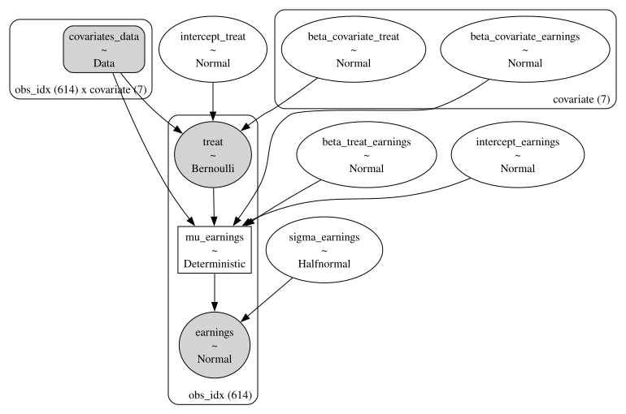
ATE from the Regression Coefficient
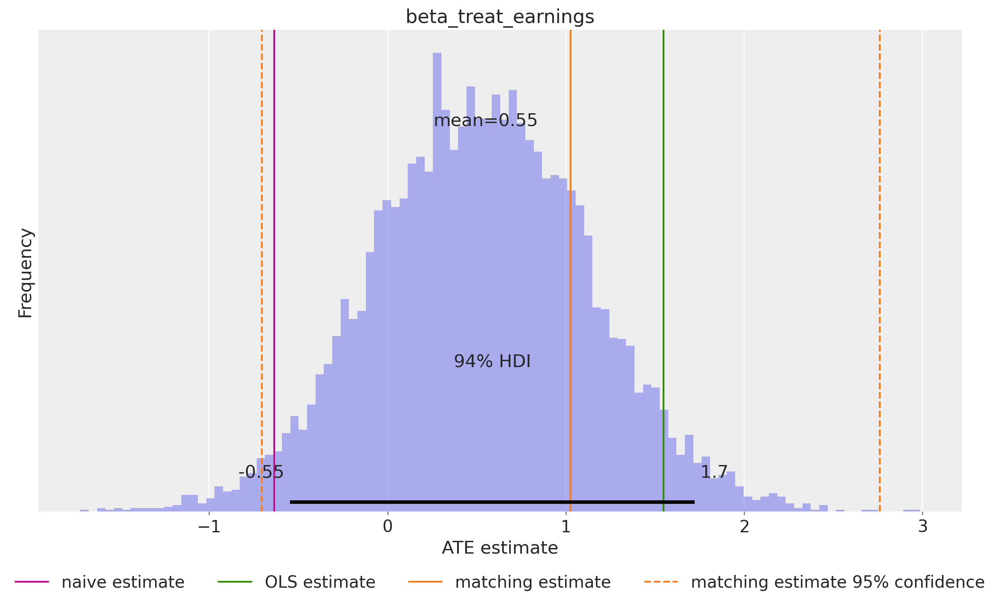
The do Operator
The do operator implements Pearl’s intervention:
\[P(Y \mid \text{do}(T = t))\]
It cuts incoming edges to the treatment node, simulating a randomized experiment.
We can use the do operator to compute the ATE:
\[ ATE = \mathbb{E}[Y \mid \text{do}(T=1)] - \mathbb{E}[Y \mid \text{do}(T=0)] \]
Do-Operator Resulting Model Graph
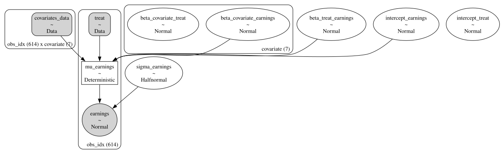
Individual Counterfactual Predictions
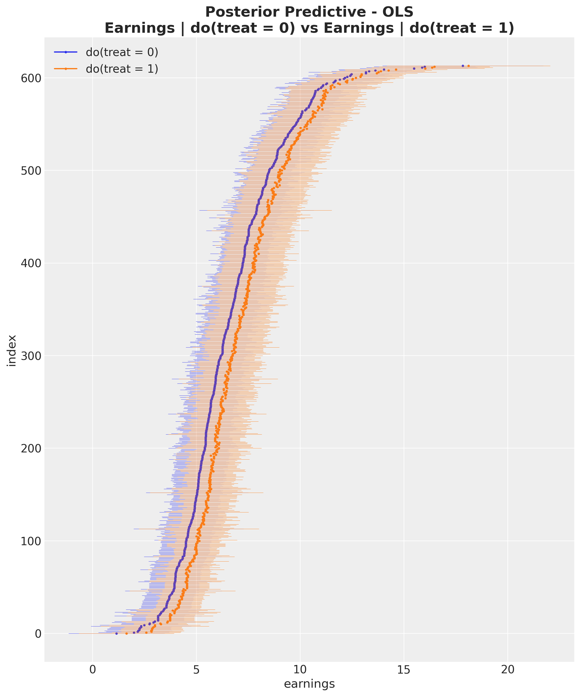
Computing the ATE using the do operator yields the same result as the regression coefficient approach.
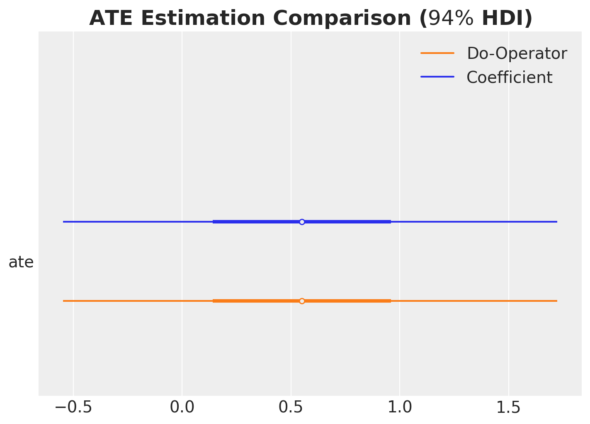
A more meaningful likelihood
Gamma Generalized Linear Model
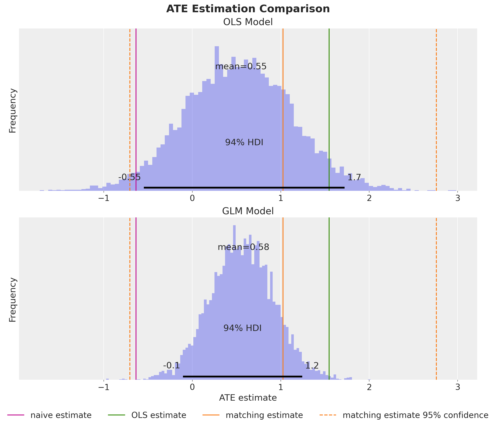
- Earnings are non-negative and right-skewed — Normal puts mass on impossible values.
- One-line model change:
pm.Normal(...)\(\to\)pm.Gamma(...)with a log link. - ATE on the original scale comes for free via the
do-operator.
Why the do-operator now matters: with a non-linear link, the regression coefficient is not the ATE. The do-operator handles non-linearity, individual counterfactuals, and joint interventions on multiple variables.
Fixed & Random Effects
Group-Level Confounding
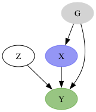
Problem: Synthetic dataset where the true causal effect of \(X\) on \(Y\) is zero. We have group-level confounding through group-level effect \(U_G\).
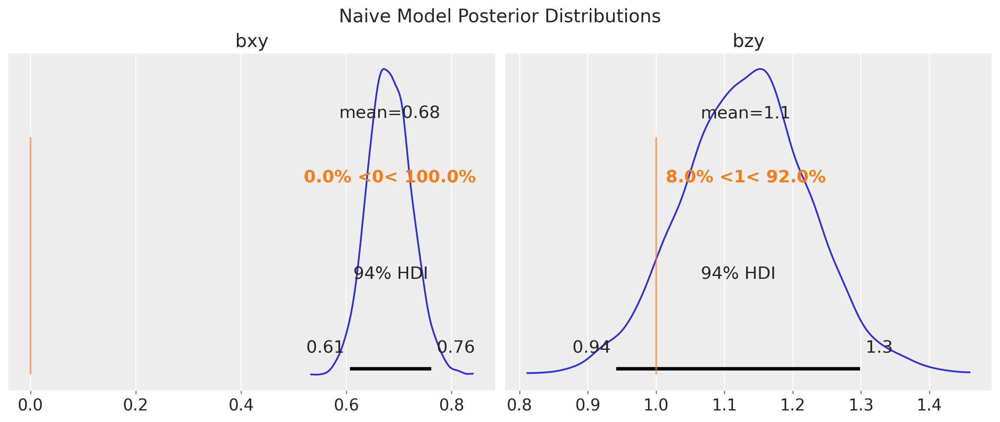
Taken from Richard McElreath’s Statistical Rethinking (2026 Lectures).
Five Estimation Strategies
Model Structure
| Model | Approach | Recovers true effect? |
|---|---|---|
| Naive | Ignores groups entirely | No (biased) |
| Fixed Effects | Group-specific intercepts | Yes (high variance) |
| Multilevel | Hierarchical priors on groups | No (confounded) |
| Mundlak | Adds group means of \(X\) | Yes (efficient) |
| Mundlak Latent | Latent group variable | Yes (best by LOO) |
\[ y = \beta_{xy}x + \beta_{zy}z + \text{?} + \varepsilon \]
Key insight (Mundlak trick): Including group-level means as predictors absorbs the between-group confounding while preserving partial pooling benefits.
Results: The Mundlak Latent Model
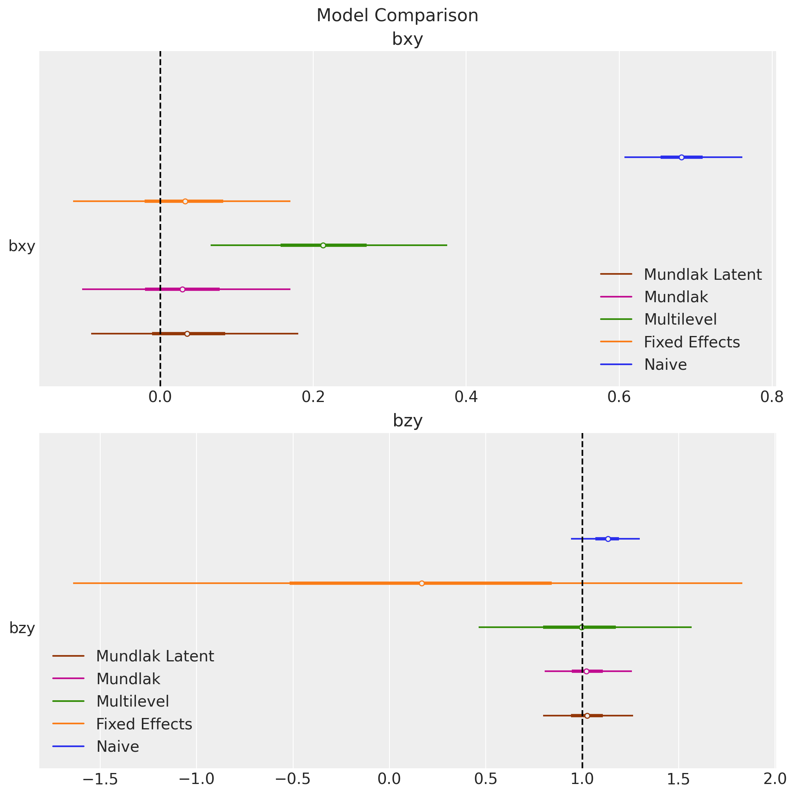
- Fixed effects
y ~ 0 + x + z + C(g)
- Multilevel
y ~ x + z + (1 | g)
- Mundlak
y ~ x + z + (1 | g) + x_bar
- Mundlak Latent
\[\begin{align*} \color{red}{u_{[g]}} & \sim \text{Normal}(\mu_u, \sigma_u) \\ x &= \alpha_x + \beta_{ux}{\color{red}{u_{[g]}}} + \varepsilon_x \\ y &= \alpha_{y, [g]} + \beta_{xy}x + \beta_{zy}z + \beta_{yg}{\color{red}{u_{[g]}}} + \varepsilon_y \end{align*}\]
Mediation Analysis: (In)Direct Effects
Question: How does family intervention reduce substance use disorder? Decompose total effect into direct and indirect pathways.

- Synthetic dataset (\(N = 410\)) studying family intervention effects during adolescence.
- Covariates:
gender(binary),conflict(ordinal family conflict level). - Treatment:
fam_int(family intervention program, binary). - Two mediators:
dev_peer(deviant peer engagement),sub_exp(drug experimentation). - Outcome:
sub_disorder(substance use disorder diagnosis, binary).
Mediation Analysis: (In)Direct Effects
Effect decomposition
Define \(E_{t, t', t''}\) as the expected outcome when fam_int \(= t\) in the outcome equation, dev_peer follows its \(\text{do}(T\!=\!t')\) distribution, and sub_exp follows its \(\text{do}(T\!=\!t'')\) distribution:
\[ E_{t,t',t''} = \sum_{m_1, m_2} \color{blue}{P(M_1\!=\!m_1 \mid \text{do}(T\!=\!t'))} \cdot \color{red}{P(M_2\!=\!m_2 \mid \text{do}(T\!=\!t''))} \cdot \color{green}{P(Y\!=\!1 \mid \text{do}(T\!=\!t, M_1\!=\!m_1, M_2\!=\!m_2))} \]
The mediators factor because there is no edge between dev_peer and sub_exp in the DAG.
We can compute the effects using the do-operator:
| Effect | Formula | Interpretation |
|---|---|---|
| TE (Total) | \(E_{1,1,1} - E_{0,0,0}\) | Full treatment effect |
| DE (Direct) | \(E_{1,0,0} - E_{0,0,0}\) | fam_int \(\to\) sub_disorder, mediators at control |
IIE\(_1\) (via dev_peer) |
\(E_{0,1,0} - E_{0,0,0}\) | Shift dev_peer to treated, hold rest at control |
IIE\(_2\) (via sub_exp) |
\(E_{0,0,1} - E_{0,0,0}\) | Shift sub_exp to treated, hold rest at control |
| INT (Interaction) | \(E_{0,1,1} - E_{0,1,0} - E_{0,0,1} + E_{0,0,0}\) | Joint mediator contribution beyond individual effects |
Takeaway: With PPLs, you decompose a single treatment effect into mechanism-specific pathways — each one a posterior distribution, each one a counterfactual query against the same model.
Mediation Decomposition

Application: Marketing Mix Modeling
Marketing Mix Modeling (MMM) is by nature a causal inference problem.
Question: How to optimally allocate the budget across channels to maximize the revenue in the next period?
We need to estimate marketing efficiency per channel (ROAS) to then optimize the budget allocation.
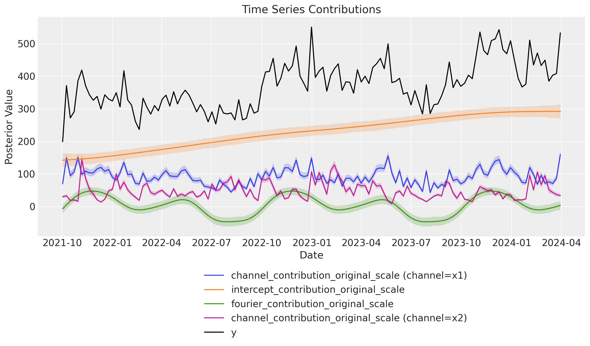
MMM is a Causal Model
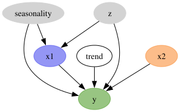
Lift Test Calibration
Saturation Curves
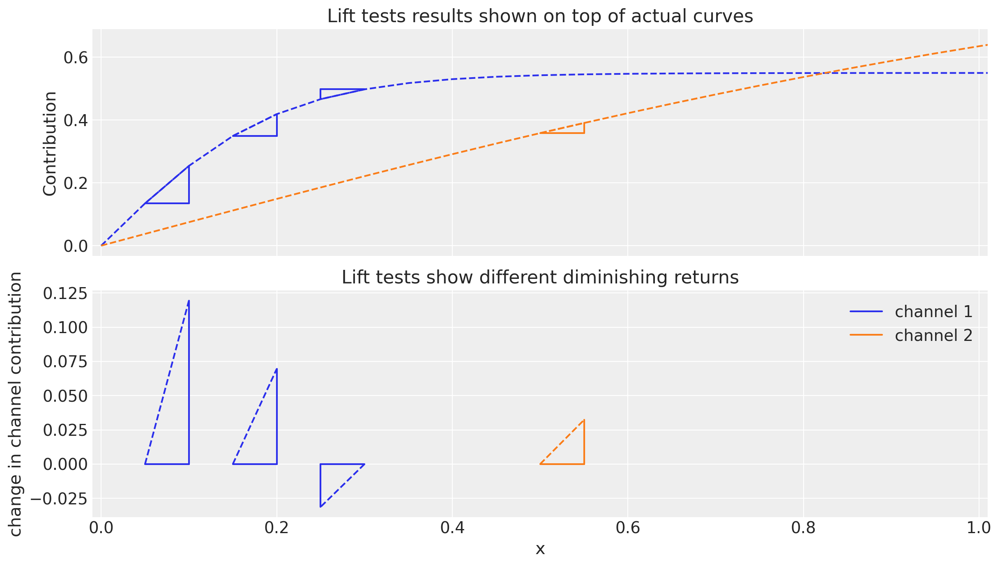
Lift Test Calibration
Additional Likelihood
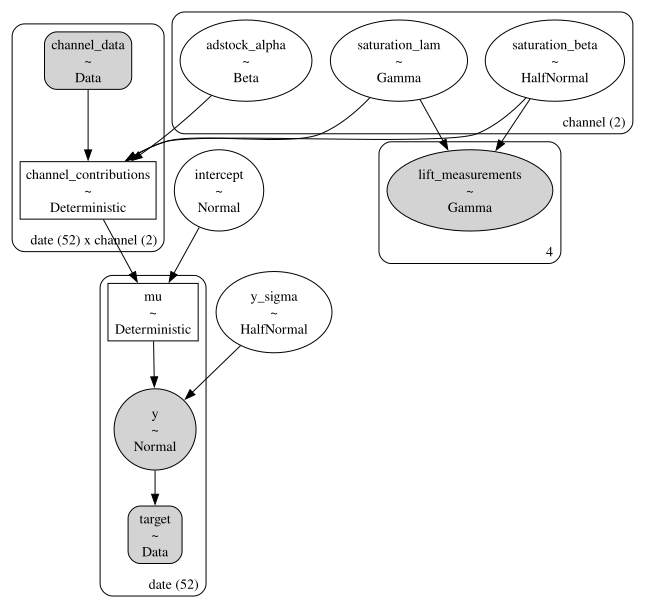
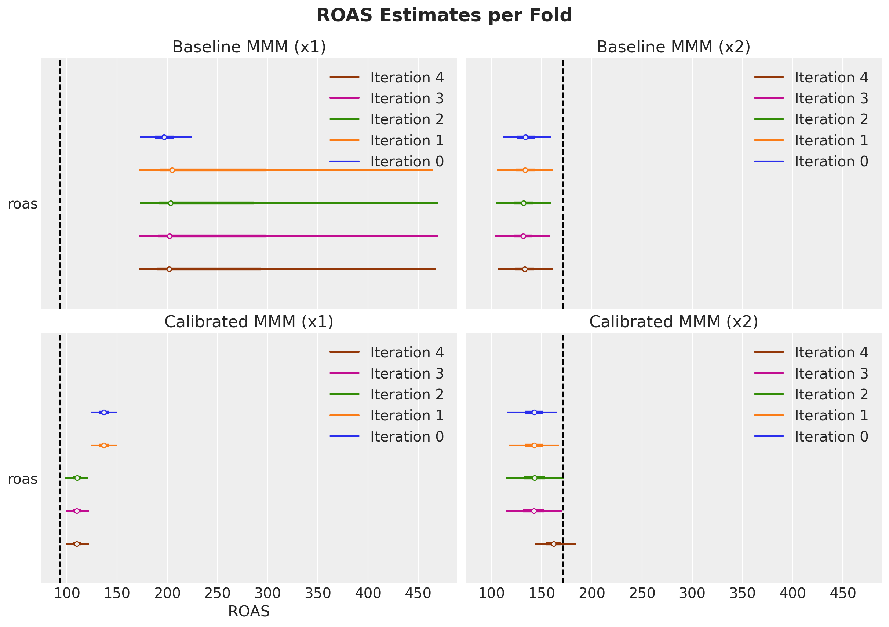
PyMC-Labs Ecosystem
Takeaways
What PPLs unlock for causal inference
- Model = DAG. Writing the generative process is stating your assumptions. \(\to\) Lalonde, Mediation
- Priors do real work. Domain knowledge tightens estimates and rules out absurdity. \(\to\) A/B Testing, CUPED
- Uncertainty for free. Posterior credible intervals on every causal estimand. \(\to\) all results slides
- Flexible likelihoods & structure. Swap Normal \(\to\) Gamma, add hierarchy, add latents. \(\to\) Gamma GLM, Mundlak, CEVAE
do-operator built in. Counterfactuals are a model transformation, not a separate library. \(\to\) ATE, Mediation- Same machinery everywhere. From the smallest A/B test to production MMM.
References — Posts & Packages
Blog Posts
- Introduction to Causal Inference with PPLs
- Fixed and Random Effects Models
- Causal Effect Estimation with Variational Inference and Latent Confounders
- Media Mix Model and Experimental Calibration
- Mediation Analysis and (In)Direct Effects with PyMC
- Mitigating Unobserved Confounders in MMMs with Lift Test Likelihoods
- Prior Predictive Modeling in Bayesian A/B Testing
- Introduction to Bayesian Power Analysis
- Bayesian Power Analysis for A/B Testing
- Bayesian CUPED
References — Books & Papers
Books
- Pearl, J. Causality: Models, Reasoning and Inference
- McElreath, R. Statistical Rethinking (2nd ed.)
- Facure, M. Causal Inference for The Brave and True
- Ness, R. O. Causal AI (Manning)
Papers
- Jin, Yuxue, et al. Bayesian methods for media mix modeling with carryover and shape effects.
- Kruschke, J. K. & Liddell, T. M. (2018). The Bayesian New Statistics: hypothesis testing, estimation, meta-analysis, and power analysis from a Bayesian perspective.
- Mundlak, Y. (1978). On the Pooling of Time Series and Cross Section Data.
- Rubin, D. B. (1974). Estimating causal effects of treatments in randomized and nonrandomized studies.